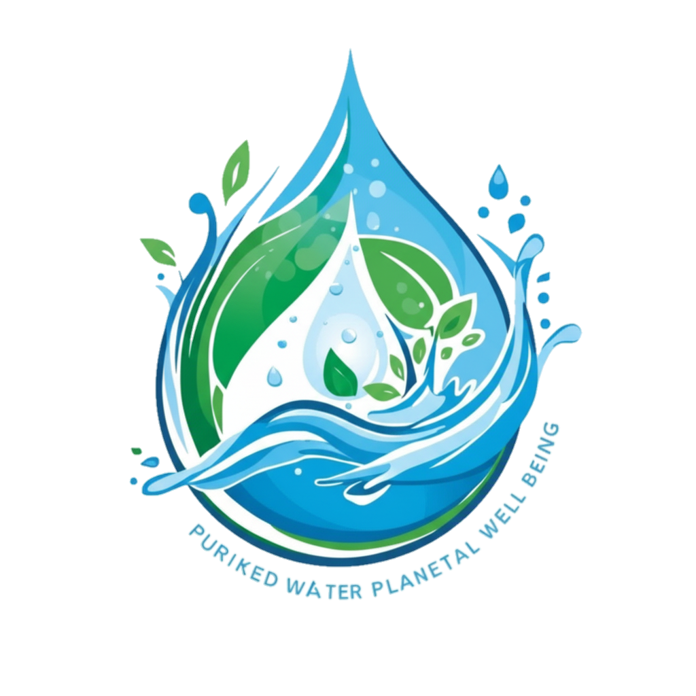

Consulta el estado actual de la calidad del agua en distintas zonas

El agua en la zona Centro presenta valores dentro del rango aceptable, manteniendo buena calidad en todos los parámetros analizados.
Calidad: 88% (Buena)
Promedio de pH: 7.0
Turbidez: 2.8 NTU
Temperatura: 10°C
Última muestra: 10/10/2025
Tendencia: +2.0% mejora
 Mi perfil
Mi perfil
 Cerrar sesión
Cerrar sesión